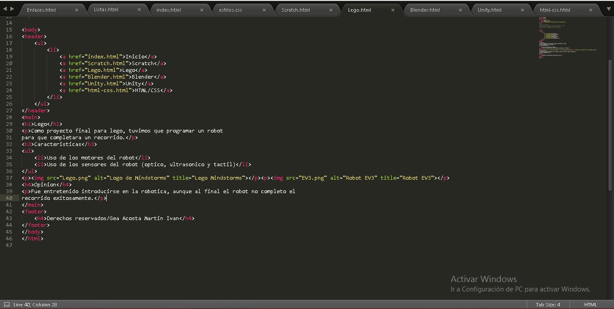

Html y Css
Como trabajo final de Html y Css creamos esta pagina, haciendo una recopilacion de todos nuestros proyectos
Caracteristicas de la pagina:
- Contiene un apartado para cada herramienta utilizada
- Cada pagina contiene encabezado, cuerpo y pie de pagina
- Hay un archivo css para dar formato a todas
- Las paginas contienen:
- Descripcion del trabajo
- Sus caracteristicas
- Imagenes
- Una opinion personal
- Formato

Opinion
Fue entretenido ver la estructura de una pagina web, ademas de recordar trabajos anteriores y darles un espacio.